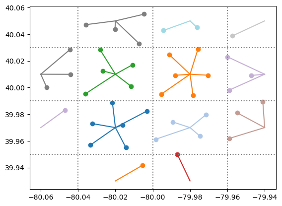
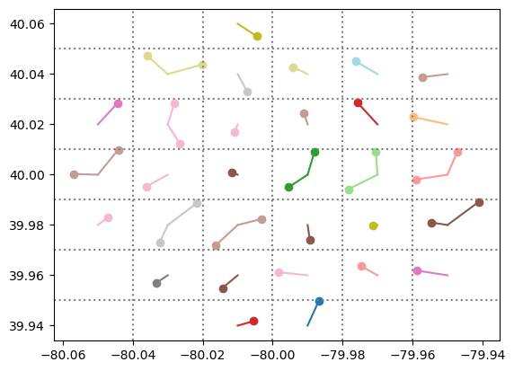

Pixel Boundaries
Contents
Pixel Boundaries#
This notebook demonstrates the pixel boundaries for the various PSM3 datasets. In particular:
Nominal Pixel Size |
Dataset Examples |
Pixel Dimensions |
Longitude Boundaries |
Latitude Boundaries |
|---|---|---|---|---|
4 km |
PSM3 TMY, PSM3 30-minute |
0.04° by 0.04° |
…, -80.04, -80.00, -79.96, … |
…, 39.95, 39.99, 40.03, … |
2 km |
PSM3 5-minute |
0.02° by 0.02° |
…, -80.02, -80.00, -79.98, … |
…, 39.97, 39.99, 40.01, … |
Additionally, the lat/lon coordinates returned in the metadata of the API response correspond to the center of the pixel.
[1]:
import matplotlib.pyplot as plt
import numpy as np
import pandas as pd
import pvlib
[3]:
phi = (1 + np.sqrt(5)) / 2 # golden ratio
def sunflower(n, alpha=0, geodesic=False):
points = []
angle_stride = 360 * phi if geodesic else 2 * np.pi / phi ** 2
b = np.round(alpha * np.sqrt(n)) # number of boundary points
for k in range(1, n + 1):
r = radius(k, n, b)
theta = k * angle_stride
points.append((r * np.cos(theta), r * np.sin(theta)))
return points
def radius(k, n, b):
if k > n - b:
return 1.0
else:
return np.sqrt(k - 0.5) / np.sqrt(n - (b + 1) / 2)
[4]:
r = 0.06 # degrees
center = (40, -80)
pts = sunflower(40)
lons = [center[1] + pt[1] * r for pt in pts]
lats = [center[0] + pt[0] * r for pt in pts]
[48]:
kwargs = {
'api_key': 'ESntbO4ouJNusYXtOovrJzCES44o11bKGq6TqGap',
'email': 'kevinanderso@gmail.com',
'attributes': ['ghi'],
'map_variables': True,
'leap_day': True,
}
[60]:
def plot(results, grid_spacing):
fig, ax = plt.subplots()
norm = plt.Normalize(out['annual_ghi'].min(), out['annual_ghi'].max())
cmap = plt.get_cmap('tab20')
for _, row in out.iterrows():
ax.plot([row['lon_norm'], row['lon']], [row['lat_norm'], row['lat']], c=cmap(norm(row['annual_ghi'])))
ax.scatter([row['lon']], [row['lat']], color=cmap(norm(row['annual_ghi'])))
xs = np.arange(-80.08, -79.88, grid_spacing)
xs = xs[(xs > out['lon'].min()) & (xs < out['lon'].max())]
ys = np.arange(39.87, 49.11, grid_spacing)
ys = ys[(ys > out['lat'].min()) & (ys < out['lat'].max())]
for x in xs:
ax.axvline(x, c='grey', ls=':')
for y in ys:
ax.axhline(y, c='grey', ls=':')
TMY (4 km)#
[20]:
results = []
for lat, lon in zip(lats, lons):
df, meta = pvlib.iotools.get_psm3(lat, lon, names='tmy', **kwargs)
results.append({
'lat': lat,
'lon': lon,
'lat_norm': meta['latitude'],
'lon_norm': meta['longitude'],
'annual_ghi': df['ghi'].resample('h').mean().sum()
})
out = pd.DataFrame(results)
[46]:
plot(out, 0.04)

30-minute (4 km)#
[49]:
results = []
for lat, lon in zip(lats, lons):
df, meta = pvlib.iotools.get_psm3(lat, lon, names='2020', interval=30, **kwargs)
results.append({
'lat': lat,
'lon': lon,
'lat_norm': meta['latitude'],
'lon_norm': meta['longitude'],
'annual_ghi': df['ghi'].resample('h').mean().sum()
})
out = pd.DataFrame(results)
[50]:
plot(out, 0.04)
5-minute (2 km)#
[ ]:
results = []
for lat, lon in zip(lats, lons):
df, meta = pvlib.iotools.get_psm3(lat, lon, names='2020', interval=5, **kwargs)
results.append({
'lat': lat,
'lon': lon,
'lat_norm': meta['latitude'],
'lon_norm': meta['longitude'],
'annual_ghi': df['ghi'].resample('h').mean().sum()
})
out = pd.DataFrame(results)
[61]:
plot(out, 0.02)

[ ]:
[ ]:
[ ]:
[ ]:
[ ]:
[ ]:
[ ]:
%load_ext watermark
%watermark --iversions -u -d -t
Last updated: 2022-09-27 21:45:50
pvlib : 0.9.3
matplotlib: 3.5.2
numpy : 1.22.3
pandas : 1.5.0